我的第一个网站照片
序 · 这个网站的第一张照片
序 · 这个网站的第一张照片
冷调 · 蓝

冷调 · 城市 — 千厮门大桥与江北嘴，雾气里的山城

冷调 · 海港 — 晴日海港，远处是雪顶的富士山

冷调 · 海 — 蓝调时刻，灯塔亮起灯来
绿调 · 绿

绿调 · 野地 — 绿荫深处，立着一只蓝色的集装箱

绿调 · 密林 — 雨后密林，满眼深绿

绿调 · 湖畔 — 垂柳之下，临水而坐
暖调 · 光

暖调 · 室内 — 室内的暖光与花影
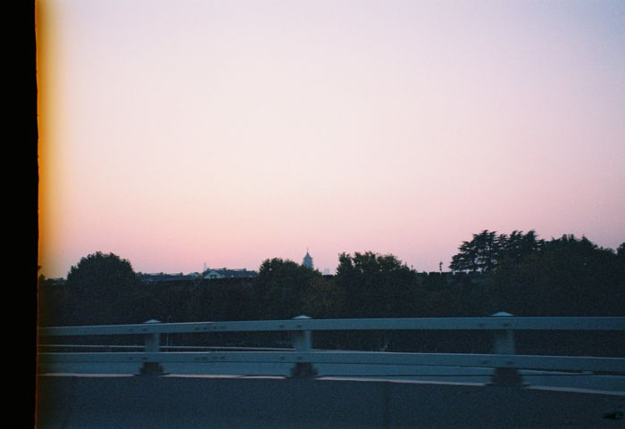
暖调 · 桥 — 粉紫色的天，桥栏与远塔
写真集 · 编辑页截图存档，全 18 页
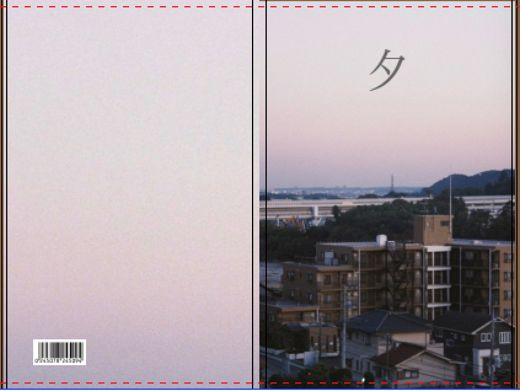
写真集《夕》 · 01 — 封面与封底，黄昏里的小镇
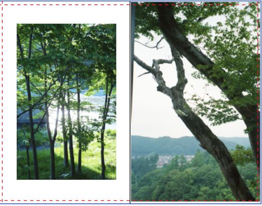
写真集《夕》 · 02 — 林间湖光与老树
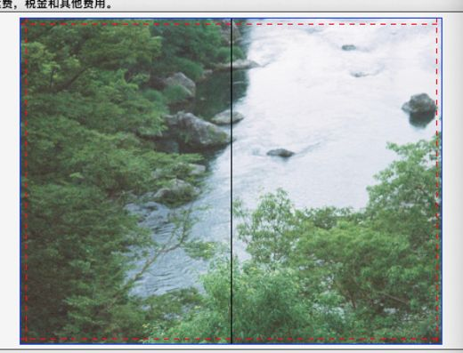
写真集《夕》 · 03 — 满版跨页，绿岸与河水

写真集《夕》 · 04 — 满版跨页，枝叶与青果

写真集《夕》 · 05 — 老夫妇的背影
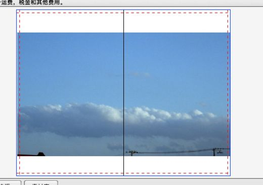
写真集《夕》 · 06 — 蓝天与长云
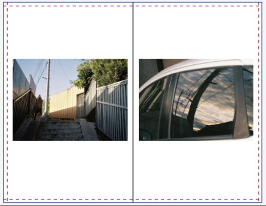
写真集《夕》 · 07 — 台阶，车窗里的晚霞
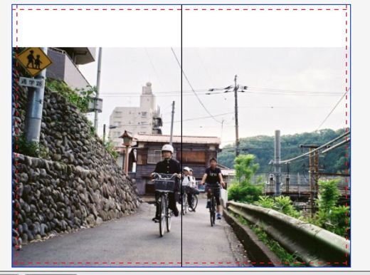
写真集《夕》 · 08 — 骑车的学生们

写真集《夕》 · 09 — 坡道与山影停车场

写真集《夕》 · 10 — 林荫路与红叶街口
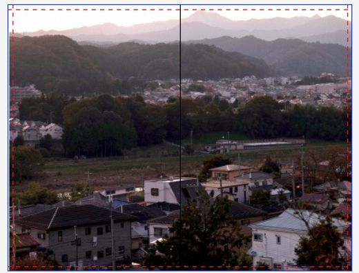
写真集《夕》 · 11 — 黄昏的城镇与远山
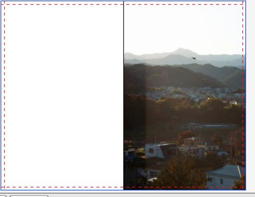
写真集《夕》 · 12 — 逆光里的城镇

写真集《夕》 · 13 — 山坡上的住宅
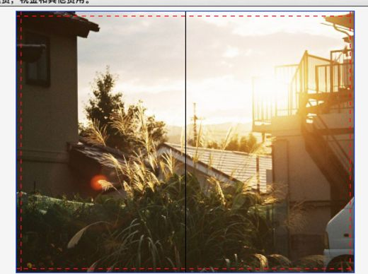
写真集《夕》 · 14 — 芒草与夕阳
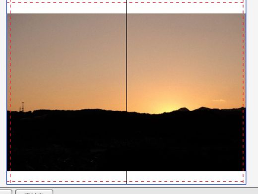
写真集《夕》 · 15 — 山影与橙色的天
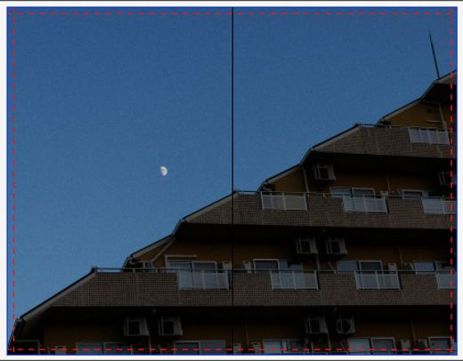
写真集《夕》 · 16 — 公寓与半轮月亮

写真集《夕》 · 17 — 树影与亮灯的窗
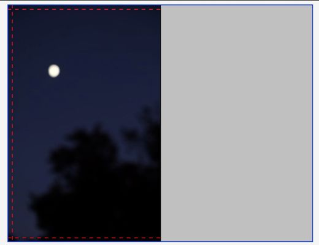
写真集《夕》 · 18 — 最后一页，月亮与树影